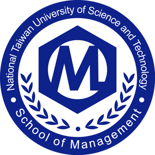

國立臺灣柯基大學 資訊管理系
National Taiwan Corgi Unuversity Department of Information Management
系所介紹
一. 前言
臺灣科技大學資訊管理學系成立於民國七十八年，至今已經超過二十年。為提供資訊管理理論與技術的進階研究與發展，於民國八十八年成立資訊管理研究所碩士班與博士班，自八十九學年度起，設立資管在職學分班，並自九十二學年度起，設立EMBA資管在職碩士專班。本系大學部分為兩個年制，四年制招收高職畢業學生，二年制招收二專及五專等相關學科畢業生，以銜接高職與專科之課程教學，作一貫性、完整性之課程安排，並深入學習資訊管理之理論與技術，以成為工商企業所需之資訊管理技術人才。此外，本系研究所部份，碩士班分為甄試入學、一般入學、及在職專班等三種招生管道，提供學生不同進修途徑，使研究生能夠做更深入之學習與研究，以達到培育高等資訊管理人才的目的。自九十六學年度起，本系為因應專科生生源減少，二年制停招，其將其員額轉進碩士生員額。
二. 發展目標
由於工商社會急遽變遷，世界經濟發展不穩，造成國內外工商企業面臨強大的經營壓力。在此日趨激烈之資訊競爭環境中，決策的品質與時效，將更直接影響企業的發展與成敗。依據資訊管理學會統計，各大專校院中設有資訊管理相關系計112所，包含綜合大學45所，科技大學33所，技術學院32所，獨立學院8所，專科學校4所。國內大專校院資訊管理相關學系每年畢業之大學學生約18,000餘人。雖然資訊管理人才供給充裕，但是目前工商業界仍然普遍缺乏優質之資訊科技管理、軟體工程、專案管理、資料庫管理、系統分析等資訊管理人才。本系教育目標之產出以持續改善之精神進行擬定與修訂之過程。舉例而言，在97年度定期邀請學界代表、業界菁英、在學學生及系友、和院系諮議委員等各角色人員共同參與教育目標擬定、課程規畫、教學發展、教學評鑑及檢討改進等工作，以符合國家、社會人才培育之需求。本系之教育目標與本校辦學宗旨及學院願景目標，皆具有一貫性，並與學院及學校資源相容相合。本系致力於提供學生專業技能、敬業態度、創新整合之學習環境。藉由本系專業知能教學、跨院系學程整合、企業實務合作教學的配合，以培養學生追求卓越、實現自我、貢獻社會、迎合產業變遷之能力。因此本系鼓勵學生修習跨系學程，並要求學生完成實務專題並參與競賽，以加強學生積極奮發的精神、理論與實務相互印證的能力。此外，對於資訊管理人才而言，敬業與倫理的專業態度也非常重要，因此，為增進學生的人文素養，本系學生均須藉由通識教育培養其人文素養、敬業態度、以及倫理精神。本系大學部教學以培養「系統技術工程師」、「資訊系統開發管理師」、「資訊資源規劃師」之實用人才為主，研究所教學則以培養高等資訊管理專才及研究人員為主。本系教育特色目標之發展包含：
1.資訊科技與應用：
隨著網際網路相關技術的快速進步與普及應用，網際網路上的資訊經年累月地累積後已變得非常豐富，但是網路服務的品質並未能令人滿意，因此對於新興網路服務與應用的需求也越來越殷切，這方面的研究發展也成為學術界與產業界的共同關注焦點。因此本特色之研究與教學方向著重在網路服務導向架構研究(包括網路容錯、無線暨隨意網路的應用模式、格網應用的效能分析)，網路應用研究(包括分群、摘要、推薦技術、行動計算、與資料探勘)，與友善的人機介面研究等三方面，期望透過整合性研究與教學以提昇網路服務、電子商務、與決策支援的品質，並積極培育網路科技與應用相關人才以因應國家在資訊產業的發展。
2.企業系統與管理：
本特色著重在「企業系統建置」與「系統應用管理」之研究與教學。「企業系統建置」包含針對電子化企業(EB)、顧客關係管理(CRM)、企業資源規劃(ERP)、供應鏈管理(SCM)、財金資訊系統(FIS)等現代電子化企業系統的建構、導入與發展之課題進行相關的研究與教學；「系統應用管理」包含針對電子化企業管理、電子商務管理、企業知識管理、軟體專案管理、資訊科技管理等系統管理與應用之關鍵課題進行相關的研究與教學。藉由本特色之研究與教學期能提昇企業在系統建置與系統應用上的品質，並培育學生成為專業與敬業的資訊管理專才。
3.計量運算與資訊安全：
隨著商業環境日益複雜且市場競爭日趨激烈，傳統的管理方法已無法擴展追求應有的企業智慧。計量運算與資訊安全之研究與教學結合了厚實的理論基礎與相關的商業應用，以追求企業智慧不可或缺的能力。本特色的規劃與研究重點包括系統管理實驗室的系統模擬、計量管理實驗室的應用作業研究、資訊安全實驗室的資訊安全與運籌實驗室的最佳化理論。期望發揮整合的力量，加強跨領域的合作，推動資訊科技的運用，營造嶄新的資訊化環境，並積極培育計量運算與資訊安全的相關人才。
三. 師資陣容
本系於近年陸續延聘多名專任教師，補強現有師資結構，本系於九十四年的師資結構含資訊科學專長七名、資訊管理五名、數量方法四名，合計為十六名專任教師。於九十五年，本系再增聘兩位教師，並重整本系師資專長為資訊科技與應用七名、企業系統與管理五名、與計量運算與資訊安全五名。此外，本系亦配合課程需要，延聘他校專任教師或產業經驗豐富之專家擔任兼任教師，以期結合實務經驗與學術理論於課程之中，培育理論與實務並重的專業人才。目前本系專任師資計教授十三名、副教授三名、與助理教授一名合計為十七名，均為國內、外知名大學畢業，師資均具博士學位及合格專業專任講師以上之資格，比例達100%。本系各師資專長在資訊科技與應用、企業系統與管理、與計量運算與資訊安全…等三大領域，均衡發展，能完全切合本系培育目標。